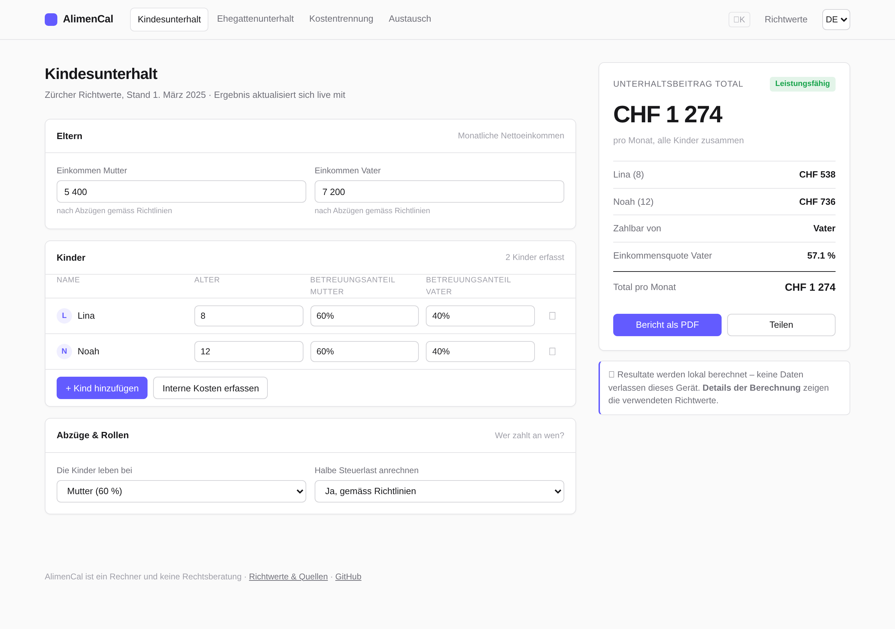
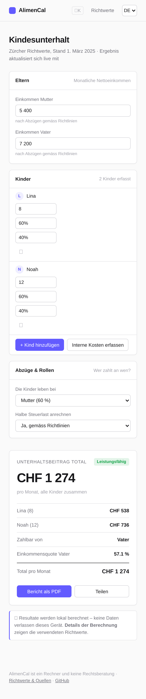
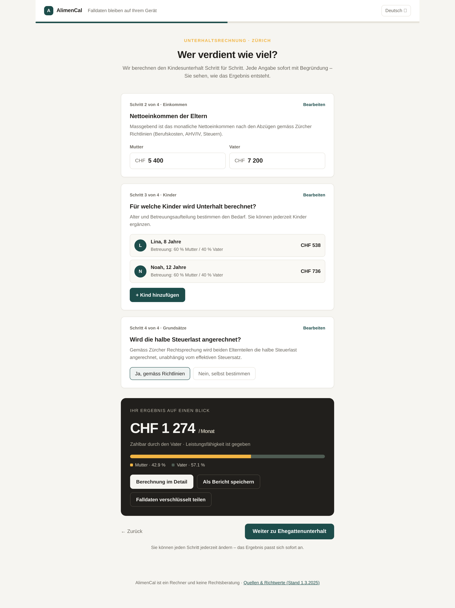
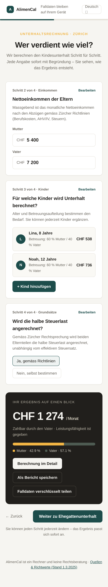
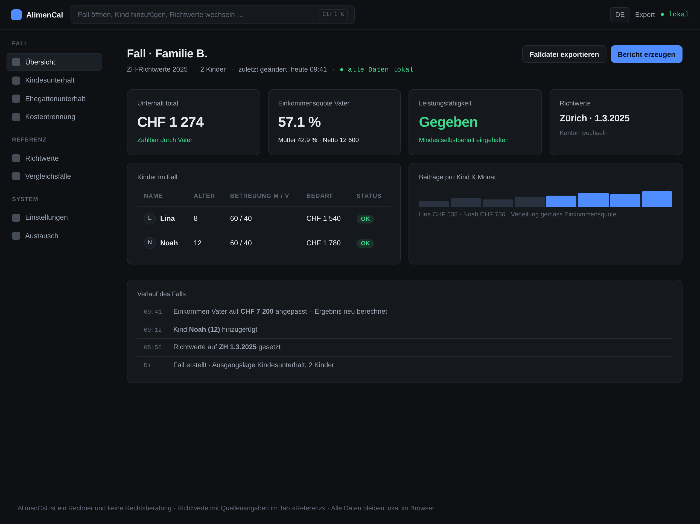
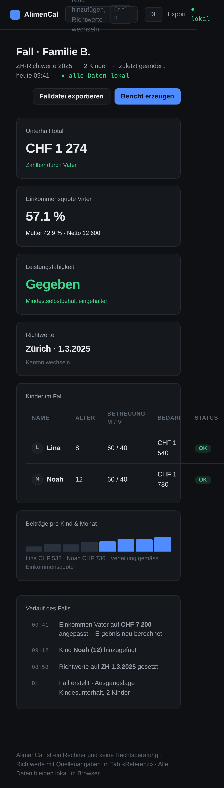

State-of-the-Art-Design – Mockups (Runde 3)
Drei Konzepte nach grundsätzlicher Hinterfragung aller bisherigen Design-Regeln. Details und Einordnung: docs/DESIGN.md, Abschnitt «Runde 3».
Calm Fintech
Werkzeug-Denken im Stil von Linear/Stripe: schmale nicht-modale Topbar, kompakte Tabellen-Inputs, dunkelmodus-fähig, Ergebnis live im Seitenpanel. Hierarchie über Dichte statt Dekor.


Guidance Flow
Geführtes Frage-Antwort-Interface mit eingebettetem Laufend-Ergebnis und Visualisierung der Einkommensaufteilung. Ziel: niedrigste Hemmschwelle für fachfremde Nutzer, Erklärung statt Tab-Sprünge.


Workspace Hub
Dark-first Fall-Akte: der Fall (nicht das Formular) ist das Objekt. Dashboard-Kacheln, Command-Bar (Ctrl+K), Verlaufsstreifen, mobile Tab-Leiste. Für intensive/repetierende Nutzung.

